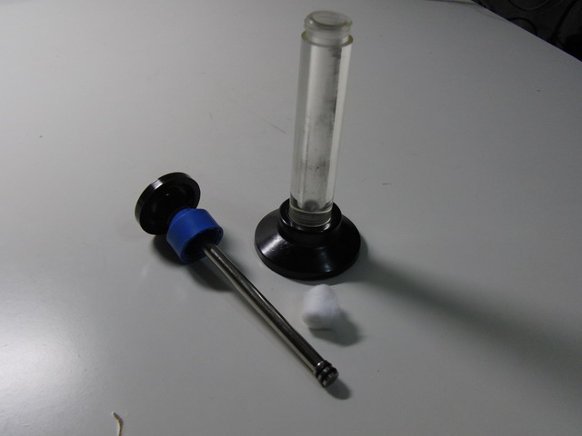
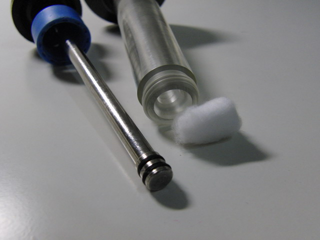
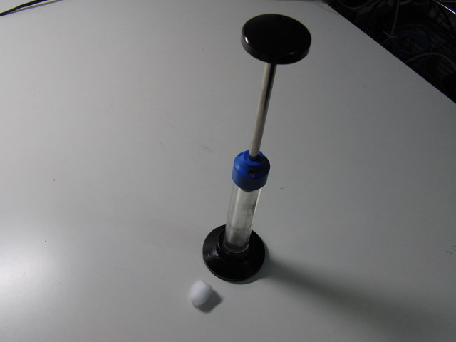
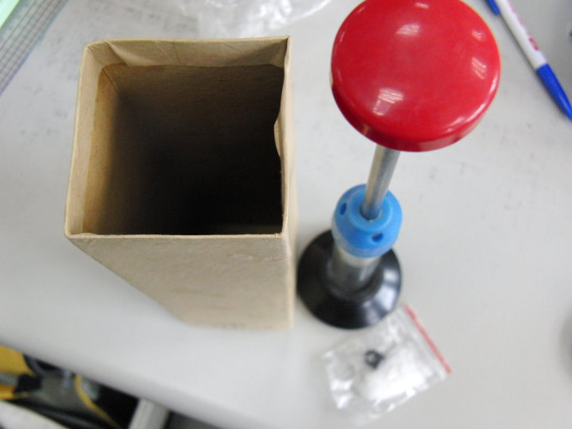
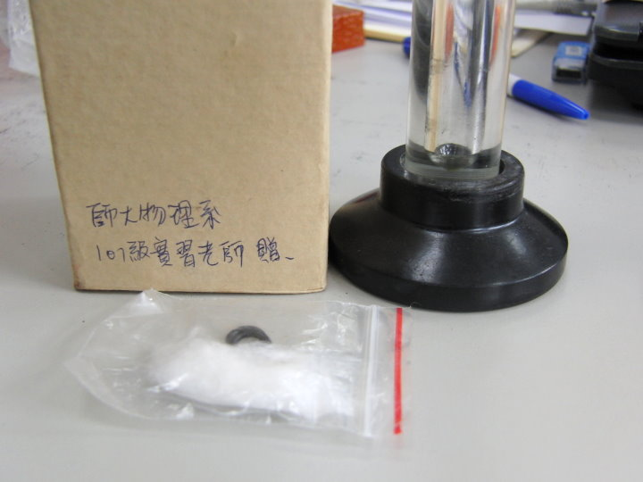
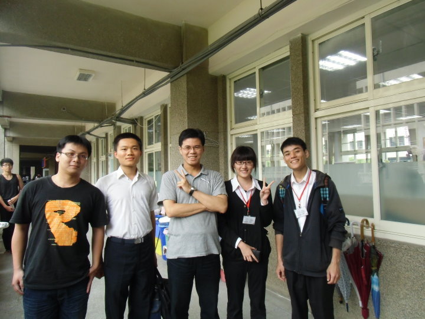

↑請看影片，每次點火，都要清空、放棉花、關上再壓，影片中連續點火是剪接的。

↑所需器材。

↑活塞前端 O-ring 特寫。

↑組合完成，管子裡只有一點點棉花，用力把活塞向下推，棉花就會起火喔！
物理原理是〝絕熱壓縮〞，你知道那是甚麼意思嗎？
========= 感 謝 ========
感謝 後甲國中 林麗華 老師提供壓氣點火實驗器材。
感謝 師大物理系 黃福坤 教授提供可以高速錄影的相機： CASIO EX-F1。
========= 後 記 ========
借給學生玩，結果被學生壞了。沒關係，師大物理系101級的實習老師們送你一套新的：

↑全新紅頭壓氣點火。

感謝師大物理系101級四位實習老師贈送。

↑師大物理101級實習老師：(左起)許捷翔、陳翔竣、我、林慧雯、吳豐全。